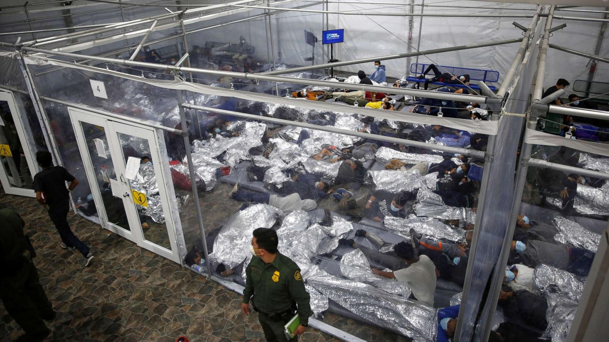
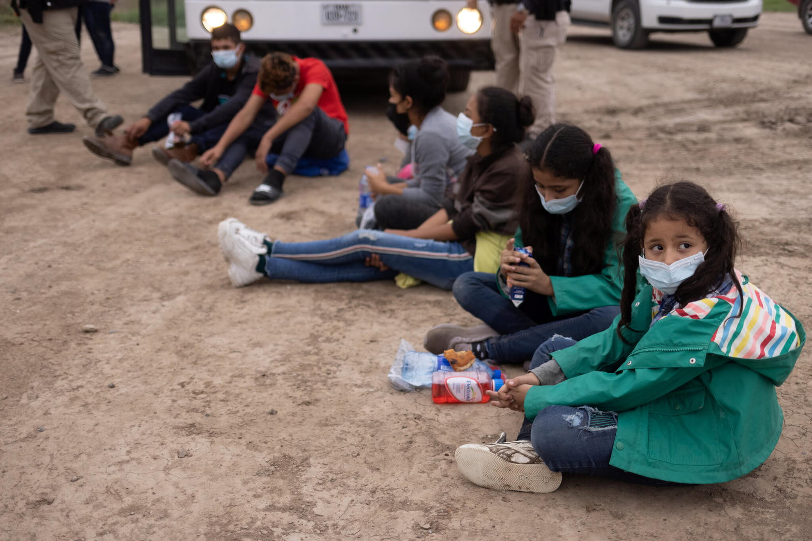
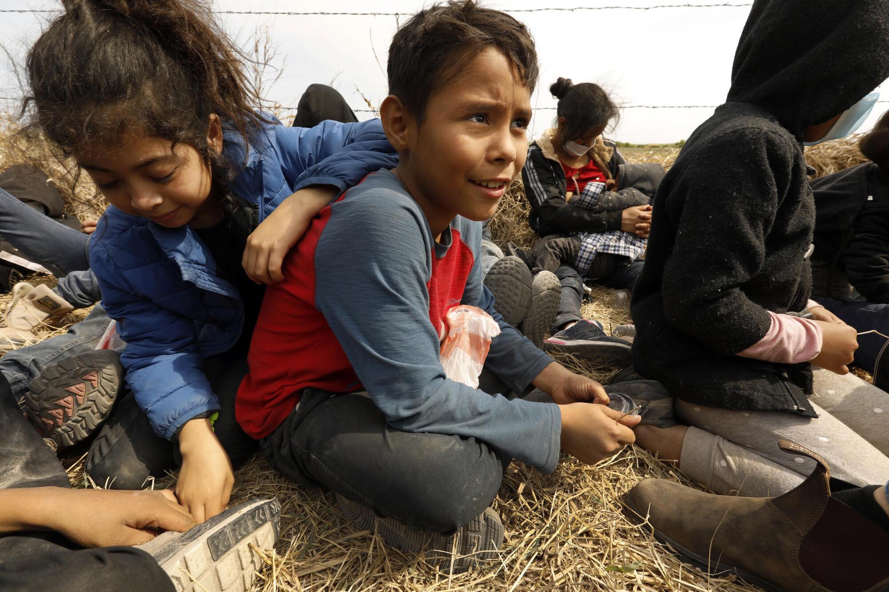

Picture a child who has already walked through desert and river. She is small enough that the plastic emergency blanket still covers her completely when she curls up on a mat in a temporary shelter. Around her, hundreds of other children wait under fluorescent light and plastic sheeting. The adults who process them speak in numbers: bed capacity, discharge targets, cost per day that has climbed past a thousand dollars.
Then a decision is made higher up the chain. Speed becomes the measure of success. Background checks are streamlined. Follow-up calls after placement become less consistent. The language used in internal meetings turns the children into units on a production line. One leaked recording captured the pressure clearly: if Henry Ford had seen this operation, he would never have become famous. This is not how you run an assembly line.

What the public record shows
Unaccompanied minors entered ORR custody during the relevant period. The system was under extraordinary pressure.
Children HHS could not reach after release in the core two-year window examined by the New York Times investigation.
Language used by the HHS Secretary in a recorded meeting while pushing for faster discharges despite staff warnings about trafficking risk.
Inspector General reviews found missing safety documentation, incomplete addresses, and large numbers of children never issued court notices.
The phones that rang into silence
After placement, caseworkers were supposed to check on the children. Many calls went unanswered. Some sponsors’ addresses were incomplete or false. In the years that followed, investigators and whistleblowers described children found in forced labor, debt bondage, and sex trafficking. Some were located only after they had been harmed. Others remain unaccounted for in the hundreds of thousands according to later tallies.
The legal argument offered in response is narrow and correct on its face: HHS responsibility ends once a child is placed with a sponsor. That boundary does not erase the choices that determined how thoroughly those sponsors were vetted, how much pressure was applied for speed, or how the later silence was treated when the phones stayed quiet.

The response that followed
Public statements from the former Secretary and his defenders have largely rejected the framing of “lost” children. They have argued the children were with sponsors who simply did not answer the phone. They have pointed to the system inherited from the previous administration. They have called some of the higher figures inaccurate or politically motivated. When recent whistleblower claims and victim statements surfaced in the California governor’s race, the pattern continued: limited direct engagement, deflection, and a preference for other topics.
There is no prominent public record of sustained personal ownership of the outcomes that followed the accelerated placements. The emotional temperature of the defense has remained cool.
Neither ignorance nor acceptable detachment
Clinical sadism requires evidence that someone takes pleasure in the suffering itself. The public record does not supply that evidence for any individual. What the record does supply is something else, equally incompatible with the trust required of high office.
It shows knowledge of rising trafficking risk. It shows pressure for speed anyway. It shows the reduction of children to production metrics. It shows later minimization of the scale of the problem once the phones stayed silent and the harm reports accumulated.
Ordinary bureaucratic numbness under volume is one explanation. Moral disengagement—the set of psychological mechanisms that let people continue harmful policies while protecting their self-image—is another. Both are failures of leadership. Neither is normal. Neither is acceptable in someone seeking to govern the largest state in the country.

What this means for California
Xavier Becerra is the Democratic nominee for Governor of California. The general election opponent is Republican Steve Hilton. (Spencer Pratt is a separate candidate in the Los Angeles mayoral race; the Governor’s contest is Becerra versus Hilton.)
The same low-accountability posture visible in the HHS record has appeared in the campaign itself: an outdated website still speaking in primary-tense language weeks after advancement, limited open media availability, and a visible calculation that the state’s partisan registration edge makes serious scrutiny optional.
California has lived through years of visible failure on homelessness, housing, crime, and the protection of the vulnerable. Elevating a record that treated hundreds of thousands of children as throughput, then minimized the subsequent harm, is not a step toward repair. It is a continuation of the same detachment.
Closing reflection
The children who crossed the border alone did not choose the policies that governed their placement. They did not choose the speed metric or the language of the assembly line. They did not choose the unanswered phones.
California voters do have a choice. The public record is not ambiguous about the scale of the failure or the tone of the response that followed. Neither ignorance of the risks nor emotional detachment from the outcomes is a qualification for the Governor’s office. Both are disqualifying.
This is not normal. It should not be rewarded.
Sources
- New York Times investigation into migrant child labor and HHS placement practices (2023)
- HHS Office of Inspector General and DHS Office of Inspector General reports on sponsor vetting, follow-up, and tracking gaps
- Leaked internal recording of HHS Secretary discussing discharge speed and “assembly line” language (reported by NYT)
- 2026 California Post / New York Post reporting on whistleblower accounts and unresolved cases
- Public statements and campaign responses from Xavier Becerra and defenders regarding the HHS record
- Ballotpedia and contemporaneous election reporting on the 2026 California gubernatorial general election matchup
This story draws only on publicly reported facts and official investigations. Clinical diagnoses of any individual are outside its scope. The pattern of policy choices, known risks, and subsequent public responses is a matter of record.